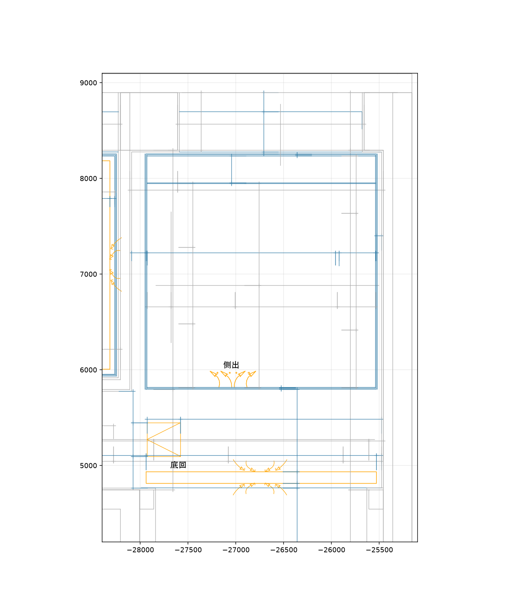
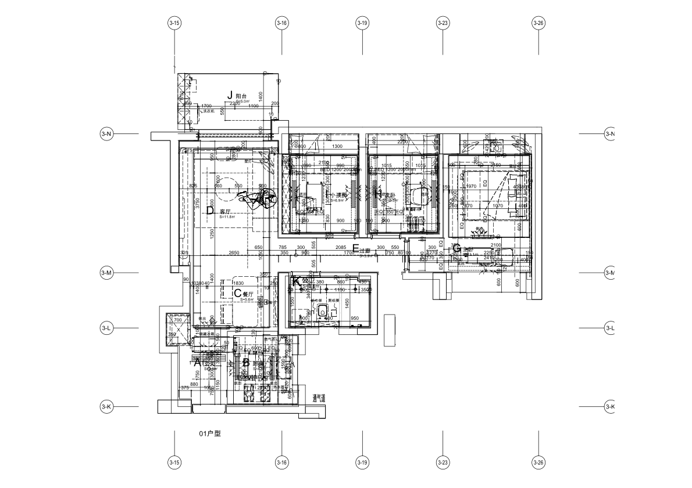
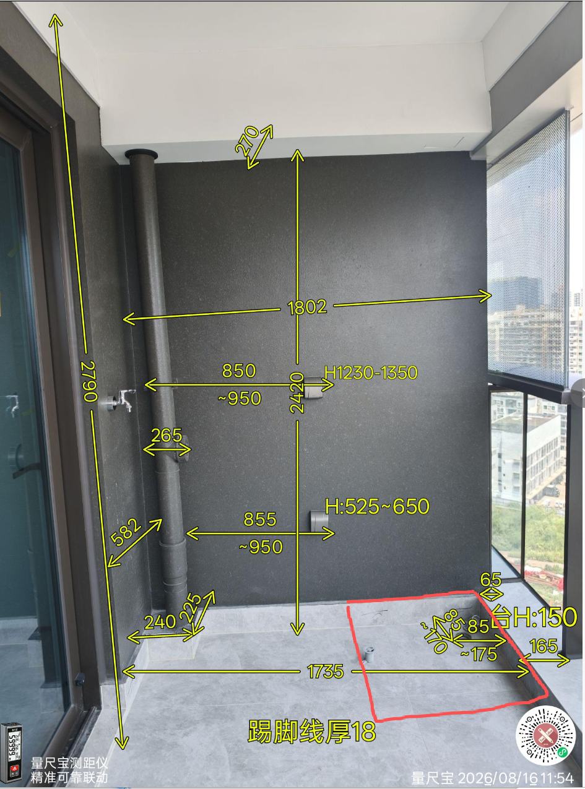

结论：存在模型冲突，尚不能确认可施工。全屋平面未完成DWG统一坐标校准，多数高度是预览值。不能通过抬高吊顶或移动风口来消除画面冲突。
层高是相邻楼层的竖向距离；无吊顶净高是完成地面到楼板底；有吊顶净高是完成地面到吊顶底。当前统一2.95m只是墙顶显示包络，不是已确认层高，也不是无吊顶净高。隐藏吊顶按钮只改变显示，不代表现场没有吊顶。
| 房间 | 中央顶面 | 边吊／梁底 | 证据状态 |
|---|---|---|---|
| 客餐厅 | 2.65m | 2.47m | 仅模型预览，未确认 |
| 阳台 | 2.79m | 2.42m | 量房照片明确标注，端部位置仍待配准 |
| 书房 | 2.50m | 2.32m | 仅模型预览，未确认 |
| 儿童房 | 2.50m | 2.32m | 仅模型预览，未确认 |
| 主卧 | 2.70m | 2.52m | 仅模型预览，未确认 |
| 入户 | 2.36m | 2.28m | 仅模型预览，未确认 |
| 走廊 | 2.36m | 2.28m | 仅模型预览，未确认 |
| 厨房 | 2.40m | 2.28m | 仅模型预览，未确认 |
| 卫生间 | 2.35m | 2.28m | 仅模型预览，未确认 |
本次检查交付DWG转换DXF的天花／空调平面及户型范围文字，未找到完整净高或层高标注。该结论不等于其他未提供图纸没有标高。不得用CAD几何的Z坐标补填高度。
客餐厅与卧室照片可见局部下吊和条形风口；主卧DWG显示深空调带、侧送及底回。厨卫为可见完成顶面，厨房照片可见格栅；入户／走廊存在低顶关系。中央平顶是否为原板抹灰或另做吊顶，现有照片无法确认。阳台照片可确认端梁下吊。以上不能推导所有区域都做了满吊，也不能默认中央均无吊顶。
| 位置 | 发现 | 问题来源／处理方向 |
|---|---|---|
| 入户鞋柜、家政柜及冰箱上柜 | 2.40m柜顶与2.36m预览天花穿插约40mm；冰箱上柜还覆盖2.28m预览回风区。 | 首先是模型未统一标高、风口配准。实际到顶方案应依据现场柜顶与回风关系重定，回风及检修位置保留；不能直接认定开发商现场有冲突。 |
| 主卧实木门衣柜 | 柜体到2.52m，与底回风模型水平重叠约531×125mm；相交8mm是格栅厚度，实际风险是封住回风。 | DWG底回位置与设计到顶柜需联审。优先独立回风空腔、可拆顶封板；不能把藤编门当作已满足通风要求。按现场端点确认后再决定柜体退让或专业调整风口。 |
| 儿童房上柜 | 柜顶2.26m距边吊预览2.32m约60mm，未撞实体顶，但进入检修示意包络。 | 这是检修风险，不是实测碰撞。下部开放格无助于顶部滤网拆卸。顶部可拆层板／检修区需要对准实际滤网路径。 |
| 书房书柜 | 柜顶2.28m，距离底回风所在边吊底预览2.32m约40mm。 | 未发生正体穿插，仍未证明维护可行。不可为到顶外观直接封死这一带；玻璃门开向及风口拆卸一并核对。 |
| 阳台洗烘／家政柜 | 2.40m柜体＋20mm封板到2420mm梁底，当前高度无穿插；立管进入柜体包络。 | 高度有照片支持，但梁位置、柜深及管道需现场配准。层板需避管，可拆背板应对准检修；不是仅做到顶便通过。 |
| 卡座吊柜 | 柜顶关联预览边吊底2.47m，无正体穿插，当前模型未覆盖侧送口。 | 仅模型条件下相容，吊顶端部、开门路径及2.47m仍待实测。此前“到顶”仅指模型到顶。 |
| 厨房吊柜 | 柜顶预览2.20m、中央顶面2.40m，相差200mm；现场图的上柜视觉衔接更紧。 | 柜顶／吊顶高度均未证实。照片不能量出这200mm；不能直接认定现场留缝。洗碗机和门分格已改，不代表高度已核准。 |
| 卫生间、主卧梳妆台 | 当前低位柜体未与顶面相撞。 | 不等于全项通过；仍需现场门窗、检修、插座及柜体尺寸核对。 |



每房间：完成地面到中央顶面、边吊底、柜顶上方最低点；每个风口：距两面固定墙的端点坐标、开口尺寸、送／回风功能、格栅及滤网取出方向；检修口尺寸与开启范围。无吊顶板底及层高须查剖面／竣工资料或现场可靠测量。让定制和空调双方在同一张复尺图确认。